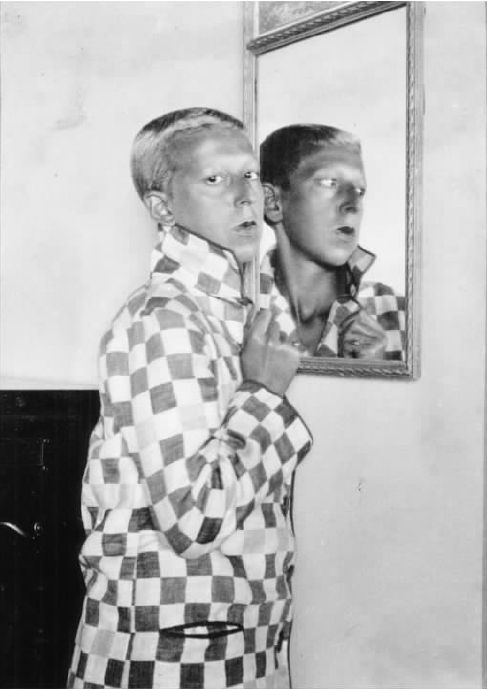
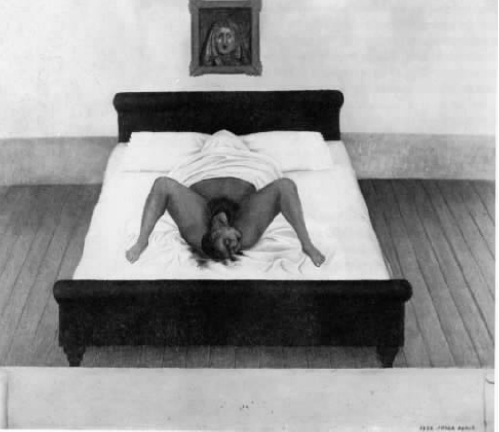
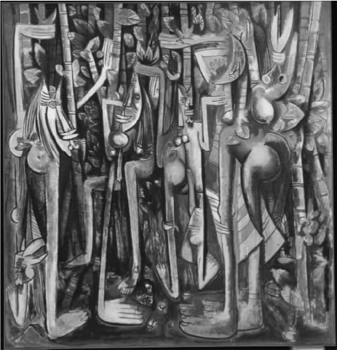

“每件事都留待去做，所有的方法肯定值得尝试，只为彻底根除家庭、国家、宗教 观点。”
这一激动人心的表白出自安德烈·布勒东的《第二次超现实主义宣言》，它有力地激发了达达主义者和超现实主义者在政治上毫不妥协的天性。但是撇开言语不谈，这些运动激进的政治抱负中有多少现实主义的成分？以下我会不时地依照当下看待达达和超现实主义的视角来找出它们是怎样显露出了意识形态方面的盲点的。本章的前两部分讨论性别与种族问题，也许正是在此处，我们才能最深切地体会到自己与这些运动的历史距离。可是达达主义者常常以某些与我们现在仍然相关的方法探询性别问题，而超现实主义者却极具先见之明地从一开始就对欧洲中心的设想提出质疑。对性别和种族的关注将讨论引至最后一个部分，即关于达达和超现实主义的总体政治交往的讨论。从实际的意识形态和政治组织来看，它们在那段动荡不定的欧洲政治史中所作的贡献有多大？它们真的全力以赴了吗？不论它们曾经代表的是什么，它们最终是否仅仅以“艺术运动”而告终呢？
我已经讨论过超现实主义在表述性欲时采用的是一种无处不在的男性恋物癖观点。但这是否足以说明超现实主义者在大多数情况下对一般女性是持否定态度的？与其达达先驱相比，他们的态度是怎样的呢？
当然，艺术史学家惠特尼·查德威克肯定已经令人信服地证明了女性在超现实主义运动的轨道中易于被理想化为缪斯。因此在男性的想象中，与其说她们被赋予了自主权，倒不如说她们被定型为女巫或童女一类的人。这样的女人通常是艺术家的妻子或女友，例如查德威克行文中布勒东疯狂的缪斯娜嘉或达利的妻子加拉，她们“补充并完成男性的创造”。即使是在超现实主义中以艺术家的身份取得卓越成就的女性也常常不得不这样做以便和某个超现实主义男性艺术家搭上点关系：20世纪30年代中期到40年代初期加入该运动的几位主要的女性艺术家，如梅雷·奥本海姆、莉奥诺拉·卡林顿、莱昂诺尔·菲尼和多萝西·唐宁，都和马克斯·恩斯特有过浪漫关系。至于雅克琳·兰芭，她在20世纪30年代末期曾是布勒东的妻子。在摆脱缪斯身份追寻自己的艺术道路之前，离婚是她必须要做的一件事。
如果说超现实主义本着膜拜欲望的原则，用偶像崇拜来阻碍女性的发展，那么达达却经常为女性创造力提供了部分发展空间。汉斯·阿尔普和苏菲·达厄贝在苏黎世的关系就印证了这一点。阿尔普和达厄贝通力合作，致力于最早期的苏黎世达达的抽象概念，并在1915年至1916年间创作出作品，比伏尔泰酒馆的开张还要早。其中的一些作品是羊毛悬挂物，由阿尔普设计，但却由达厄贝制作而成，她那时在苏黎世艺术学校教授设计课程。阿尔普和达厄贝在美术背景下结合实用艺术或手工艺，展示这些织物，战略性地把包含“女性”装饰内涵的技巧引入先前属于“男性”的领域，因而不仅用一种达达精神挑战了油画所占据的传统主导地位，而且还质疑了以男性为中心的创造性构思。虽然阿尔普常常将这些艺术品归功于他自己，但是这些姿态的战略含义依然丝毫不减。
女性在与其他达达主义艺术家的交往中不断成长。柏林的劳乌尔·豪斯曼和汉娜·赫希的关系给予赫希相当多的创作自由，尽管他们之间吵闹不休的关系源于豪斯曼的双重标准，即他一方面鼓吹自由恋爱，一方面又拒绝放弃自己的婚姻。她的一些照片蒙太奇揭穿了婚姻的真相（图18），另外一些照片探讨了20世纪20年代早期魏玛德国“新女性”的地位，记录了女性形象，她们既参与为广告商的商业利益服务的运动或流行文化，同时也为女性主义的政治需求服务。除此之外，男性达达往往和超现实主义一样崇尚男权。
让我们再回到男性超现实主义者，但在他们对待女性的方式上我们必须谨慎以免做出草率的判断。也许我们可以说，他们不假思索地复制了那个时代对于女性同仁的态度，虽然他们常常在作品中对女性气质持肯定态度。在这方面，我们值得回到精神分析这个主题，也就是歇斯底里，这种病症几乎毫无例外只出现在女病人身上。弗洛伊德的老师沙尔科曾在19世纪70年代末对这种病症进行过一次声名狼藉的研究。他在巴黎索尔伯特莱医院就此病症作了公开讲座，讲座期间病人们热情地陷入了这种病征典型的痴迷状态。尽管弗洛伊德最终推断说歇斯底里是性压抑的征兆，但是超现实主义者却选择轻视这种病症的病理学方面，而在1928年的《超现实主义革命》中将歇斯底里作为一种“表达方式”加以庆祝。令人毫不意外的是，女权主义理论家批评超现实主义者忽视社会边缘化、社会从属化以及由这种据称是“诗意”的状态而引起的痛苦。然而，精神分析历史学家伊丽莎白·卢迪内斯库却将超现实主义者对歇斯底里的崇拜同他们对女罪犯如帕潘姐妹（图10）或维奥莱特·诺奇埃尔的支持联系起来。后者于1934年在法国引起极大关注，她毒死了双亲，在随后的审判中被证明精神严重失常。卢迪内斯库注意到超现实主义者通过赞赏这些女性，公开支持一种危险且具有颠覆性的女性气质，而这种气质是一种特别现代的被解放了的女性意识的初期形式。
事实上，超现实主义者对幽闭恐怖的女性气质的尊崇在政治上契合艺术史学家罗瑟琳·克劳斯的论述，她认为超现实主义艺术中露骨的恋物癖和物化的女性形象甚至都可从原始女权主义者的视角来加以审视。根据克劳斯的观点，恋物癖如果被理解为是对“正常”性欲的“颠覆”，那就间接地暗示了对人工的重视胜过天然。她还提出“女性”这一类别是一种社会建构，远非自然天成。基于此，巴塔耶对混杂的有伤风化的追求，或贝尔默对拼凑性器官的痴迷，都在拒绝将一种根本的“女性特征”理想化以及承认艺术表现从根本而言是不自然的。可是，克劳斯的女权主义反对者立刻争辩说，与人工相连并不必然解放女性；毕竟，时尚广告就是特别建立在人工基础之上的。此外苏珊·鲁宾·苏莱曼提议说，克劳斯对恋物癖的强调就是在恋物癖的范围之内以男性主宰的假想为基础的。根据弗洛伊德的观点，恋物癖是男性无意识中将蕴含“母亲阳物”的物品视为替代物，以此阻隔女性被阉割的可能。阳具的想法因此被放在一边。紧接这一点的是，超现实主义不可避免地赞成一种男权主义的象征系统。就性别政治而言，让女性支持男性的表述结构将是适得其反的。
女性超现实主义艺术家当然挑战了有关性别的固有观念。这当中的一个重要人物是克劳德·卡恩。卡恩原名露西·舒沃博，出生于法国南特，她用笔名来强化性别的模糊性，而模糊性别特征也常常成为她在20世纪二三十年代期间拍摄自我肖像时探索的主题。这种含糊的性别愚弄了历史学家多年。卡恩甚至没有出现在惠特尼·查德威克撰写的《女性艺术家和超现实主义运动》（1985年）一书的索引中，直到20世纪80年代后期她才被人们重新发现。她的照片显示，她将自己包裹在各种各样的假相之中——从健身者到日本女偶——以至于她的女性气质变成某种明显“被建构出来”的东西。在她的一幅自拍照（图27）中，她以衣着简单的男性形象清晰地暗示了自己的同性恋身份。卡恩觉察到女性在视觉表现中常常是（男性）注视的对象，于是正视我们的注目。与此同时，镜中的她又将另一重注视投射到别处。
近年来，另外一个被重新发现的女艺术家（这次与纽约达达有关）是冯·弗朗塔格——诺布朗霍文男爵夫人。这位男爵夫人是个神秘有趣的怪人，她的确曾与一位德国男爵结婚，但最终身无分文流落纽约，被迫给艺术家做模特以维持生计。她经常头戴煤斗或在脸上贴着盖过邮戳的邮票步行穿过格林威治村。不过除了那件引人注目的作品《上帝》之外，可以说她对达达运动的贡献微不足道。这件创作于1917年的现成品是一根直插在轴锯箱上的自来水管。她似乎也曾是杜尚和曼·雷嘲笑的对象，1921年这两个人构思了一部粗野下流却最终流产的电影，在这部电影里她充任主角并被剃掉了阴毛。当时，重要的是要特别警惕过分积极的修正主义。存在着一种曲解人物与历史环境之间的实际关系的危险。重新发现先前曾被忽视的女性一直是达达和超现实主义研究者极其重要的规划，但它有其自身的问题。将男爵夫人这样的艺术家写入达达和超现实主义的叙述而不是将她们视为“特例”而加以隔离似乎是合适的，这在一定程度上也是我在本书中采用的策略。但那个过程是否强化了她们在历史中对男性中心的文化意识形态所做出的屈服呢？

图27 克劳德·卡恩，《自拍像》，照片，1928年。
无论如何，历史学家也许没有重视某些达达主义和超现实主义男性艺术家的作品中所表现出的自反性的程度。但是他们对待女性的态度具有时代特征——法国的女性直到二战后才获得选举权——这些男人可能已经认识到自己的男性身份从某种程度上将不再稳固或将受到质疑。
达达和超现实主义艺术都用复杂的方式表现男性气质。性能力及其繁殖结果是它们时常触及的一个主题，尽管令人奇怪的是这个主题在文学作品中很少被提及。例如马克斯·恩斯特于1934年创作过两幅半抽象的超现实主义画作，名为《盲泳者》，标题本身即富有诗意地影射了男性性器官及输精管，同时还唤起了无可掩饰的性欲能量。恩斯特作品中的盲目与转向内在的视觉体验主题相关，这意味着此类主题明目张胆的性暗示产生了某种程度的升华。我们在安德烈·马松的作品《鸟的诞生》（图16）中也能看到类似过程：（男性）艺术家下意识地将繁殖比作形象的产生：外阴分娩，产出在高空翱翔的鸟儿，而这鸟儿在最基本的比喻层面上唤醒了“飞翔的想象力”。如果我们把这种诞生的表述和一位与超现实主义密切相关的女艺术家——墨西哥画家弗里达·卡洛的同主题作品相比较的话，就能看到一些巨大的差异（图28）。卡洛描绘了自己从母亲被寿衣包裹着的身体里出生的情景，画中最异乎寻常的意象由其母的去世和未出生便夭折的孩子所激发。事实上她赋予了自己生命。她的作品间接地否认了男性唤起的生育的激情，断言分娩既会导致身体的不洁也会造成感情的创伤。
不论超现实主义男性艺术家对生殖的看法有多么理想主义（它将会诱使那个名誉扫地的精神分析概念“子宫妒羡”的复苏），但很明显男性思考了自身所具有的生殖能力，同时也带着某种真诚思考了女性的生殖能力。尽管他们膜拜女性，但他们在将性欲概念化时，还是引人注目地显示出了明确的男性视角。从那个意义上来说，他们的方法与我们现在“解构”男性气质的兴趣是一致的，而这正是达达最迫切关注的。

图28 弗里达·卡洛，《我的出生》，画作，1932年。
纽约的马塞尔·杜尚在作品《大玻璃》中对性别差异现象的研究甚于其他任何人。男子气质，或更确切地说是男子性功能不全，是它的主题之一。在为这幅作品所写的注解中，杜尚令人费解地断言，位于画作下半部分的那些单身汉被困在“苹果酸模具”中，“将永远不能穿越这个面具”。
1921年至1924年间，杜尚自己也男扮女装成另一个自我——萝丝·瑟拉薇，并请曼·雷替她／他拍摄了系列照片。这些照片非常有趣地与我们已经看过的克劳德·卡恩的《自拍像》相对应（图27）。与卡恩的性别转换相比较，杜尚似乎显得有些三心二意。其中一张照片里，萝丝的脸部特征看起来粗野得可疑，好像杜尚自己在承认这种乔装无效。我们回忆一下苏珊·鲁宾·苏莱曼关于达达∕超现实主义图像学的父权基础的观点，就可以把这一点解释为象征萝丝秘密地拥有男性生殖器：从精神分析学来说，她是一个“阳物母亲”。这可为这张照片添加一种直截了当的厌恶女性的情绪，但同样我们也可以证明萝丝代表着对20世纪早期在法国和美国出现的被解放了的“男性化的女人”所做的某种讽刺，在某种程度上来说这也是克劳德·卡恩所要表现的，尽管她的自拍像创作于杜尚的作品之后。杜尚似乎在生活和工作中都在玩弄男性分离主义，忠实地维护他的单身汉地位，同时还在《泉》（图3）之类的作品中讽喻针对男性的艺术论述（图3）。这些也许可以被看作是对女性分离主义的时髦回应。杜尚暗示男性艺术家应该重新定义自己的性别，而不是沿着超现实主义线路利用女性去“改变生活”。
如果达达对待性别的态度比起超现实主义更加符合我们现在的政治观点，那么在涉及种族问题时就又是另外一回事了。然而，首先有必要考虑“原始主义”这个问题。“原始艺术”在20世纪初叶让艺术家广泛着迷，从毕加索到德国的表现主义艺术家莫不如此。他们形成了对非洲面具的奇特崇拜，提出了激进的简化人类形体的方法（据称毕加索曾说过这些方法都是理性的，这种说法很出名），并且返回最初的“源头”，将其视为现代主义对欧洲文化过于矫揉造作的批评的一部分。
这种看法也渗入到达达之中。让我们再来看看扬科为苏黎世伏尔泰酒馆创作的画作（图2）。画家记录了舞台后方墙上悬挂着的一个巨大面具，舞台上的达达主义者可能戴着用纸板和麻绳捆扎而成的色彩鲜明的面具，这些面具是扬科为他们的表演而制作的。我们从雨果·巴尔的日记中得知，“黑人舞蹈”是达达惯用的表现手段。舞者似乎是从仪式的角度来理解这种舞蹈的，把它与“占有”的现象联结在了一起。巴尔这样写道：“每个面具不但要搭配与之相配的戏装，而且还要求运用一套非常特殊的姿势，耸人听闻甚至接近疯狂。”然而，很少有达达主义者能领会这些面具确切的文化背景，也许特里斯坦·查拉是个例外，他后来写了关于非洲和大洋洲艺术的文章。柏林的汉娜·赫希在1925年至1930年期间创作了一系列拼贴照片《来自人种志学博物馆》，其中她挑衅地将黑人部落面具的照片放在欧洲白人妇女的身体上，以此作为对常规的西方“美”的批判。这些作品暗示了将非洲审美观置于欧洲之上并加以珍视，但这样做也意味着把非洲视为外来的“他者”。
让我们回到超现实主义。毫无疑问，“原始”艺术品是激发马克斯·恩斯特、安德烈·马松、阿尔贝托·贾科梅蒂和维克多·布罗纳灵感的决定性因素。这些物品是美国印第安人、爱斯基摩人和大洋洲人的作品。非洲艺术在超现实主义者中并不那么流行，部分原因是立体主义对于它的运用过于形式主义，而大洋洲艺术在解剖学方面所具备的让人迷失方向的自由以及它们复杂的象征意义特别让现实主义者景仰。1929年，超现实主义者在比利时的超现实主义杂志《变体》上发表了他们重新绘制的世界地图。这幅地图上根本就没有法国和美国，而波利尼西亚、墨西哥和阿拉斯加却变得异常重要。他们在作品中显露出了偏向学术化的折中主义。贾科梅蒂在绘画中吸取了新爱尔兰岛小雕像的形式特点，将它作为1931年的木雕作品《笼木》的创作源泉：一堆杂乱无章、交织纠结的形体被困在一个围起来的脚手架中。从20世纪20年代末期的画作中暗指复活节岛的鸟的形象到20世纪40年代早期图腾雕刻中所参照的美洲印第安克奇纳神玩具娃娃，都可以看出恩斯特对原始文化的掠夺绝对是贪婪的。
随着20世纪20年代向前推进，超现实主义者的借鉴范围随着法国人种志文学的显著扩张而扩大。大多数艺术家都十分精通吕西安·列维——布留尔和马塞尔·莫斯，还有英国人类学家詹姆斯·弗雷泽爵士等人的研究成果。法国对“人种论”的关注与英国对社会人类学的关注相似，这种关注还延伸至“纯文学”及学术专业研究领域。在20世纪二三十年代，法国文化生活对待“原始”的态度发生了巨大转变，其象征是用乱糟糟的异国部落收藏品取代巴黎老左卡德罗博物馆的馆藏，而关注种族独特性和不分等级差别地展出不同文化物品的做法则被看作是支持男性博物馆（成立于1937年）的表现。
这个重大转变成为了《文献》背后的推动力，这份杂志是巴塔耶身边与超现实主义团体持不同政见的人创办的宣传工具。事实上，它的发起人和编辑董事会的一个成员是保罗·里维埃（男性博物馆的创建者），还有保罗·里维（巴黎人种志学院的共同创立者之一）以及米歇尔·莱里斯（此前是布勒东超现实主义团体中的一员，也是一位训练有素的人种志学家）。该杂志的版面被美国文化史学家詹姆斯·克利福德戏称为“人种志学的超现实主义”，在“高雅”和“低等”的文化物品和实践之间进行漫不经心的转变。举例而言，杂志上发表过一系列关于“男人”的非传统的“词典定义”，其中一个定义由英国一位化学家所概括：
当然，这些异乎寻常的信息有着自己独特的异国情调。但在这个例子中，它们被用来取代欧洲中心主义的“男人”概念所拥有的权威——这一概念建立在白皮肤和笛卡尔的理性主义之上，此前是高于并反对“原始”观点的。
在此我们可以了解与超现实主义有关的论述中存在的深刻的反殖民主义精神，但是我们不得不回到“正式的”超现实主义，回到安德烈·布勒东对法属西印度群岛“黑人文化与精神价值”运动的兴起所做出的反应，以便理解超现实主义在涉及种族问题时积极参与政治的态度。超现实主义者早在1925年就显示了与法国殖民主义的对立。他们第一个明确表示的政治活动是公开支持里夫部落居民在摩洛哥开展的反对法国当权者的斗争。1931年他们抗议在巴黎举办的庆祝法国领土权和拥护殖民的大型展览。除了分发传单警示人们不去参观此次展览之外，他们还举办了另一个名为“殖民地真相”的展览。这个展览的一件展品重点评论了西方将部落物品等同于“恋物”的设想。他们在一个黑人孩童形状的收集箱旁展示了天主教的“圣母和基督”小雕像，下面附有“欧洲的‘恋物’”说明标签，以此简单明了地暗示了西方在宗教和经济上的恋物癖。20世纪30年代后期，由于超现实主义运动和那些来自殖民地的作家之间建立了新的联系，反殖民情绪愈演愈烈，其中主要的推动者是诗人艾梅·塞萨尔。
塞萨尔来自马丁尼克岛，20世纪30年代后期曾在巴黎学习，此后于1939年回到自己的故乡。1941年起，他和妻子苏珊还有哲学家勒内·梅尼共同出版了《热带》杂志，该杂志将对法国维希政府的反对和对超现实主义自由原则的赞赏与刚出现的“黑人文化与精神价值”的观念融合在一起，认为法国通过民族“同化”的观念强化了它的殖民地政策。面对此种意识形态时，该杂志主张要维护黑人身份。1941年，安德烈·布勒东正逃离被德国占领的法国，他在去美国的途中游历了马丁尼克岛，并发现了塞萨尔和《热带》杂志。随后他断言塞萨尔于1938年至1939年创作的长诗《回到我的故乡》是“我们时代最伟大的抒情诗丰碑”。布勒东和殖民地的关系并没有到此为止。1945年，他于二战后从美国返回法国之前，造访了海地，发表了关于超现实主义的演讲。早在1804年海地就爆发过奴隶起义，但自1915年起就一直处于美国的控制之下。布勒东的到来似乎在年轻的知识分子当中起到了催化剂的作用，激发了他们心中的反抗情绪。一场革命爆发了，尽管这位超现实主义领袖唯一公开的政治姿态似乎只是拒绝与美国支持的海地总统会晤。这一次，超现实主义的言论为一场真正的革命作出了贡献。
让我们再来看看塞萨尔的诗，更确切地说是来看看《回到我的故乡》。值得强调的是，虽然远离巴黎，超现实主义不和谐的并置技巧却在这里被用来表达人们对过去所受压迫的憎恨和对新语言的渴望：
这种激情与另一位受超现实主义影响的人的视觉艺术相得益彰。这位艺术家长期浸淫于欧洲文化，后来回到他的殖民地故乡。他就是韦尔弗雷多·兰姆。兰姆来自古巴，在马德里受训。身为一名画家，他先是深受毕加索的影响，而后又于1938年深受超现实主义者的影响。他在回古巴的途中，曾陪伴布勒东一起经过马丁尼克岛，此次归途促使他创作了一幅主要作品《丛林》。

图29 韦尔弗雷多·兰姆，《丛林》，油画，1943年，现代艺术博物馆，纽约。
在这幅画中，一群瘦长的裸体人形被围在使人感到幽闭恐怖的植物之中。它在一般意义上运用了由超现实主义衍生出来的“尚古化”一词，把它与法国“天真”画家亨利·卢梭画中展示的富于纯粹异国风情的原始森林和毕加索于1907年创作并产生巨大影响的先立体主义代表作《亚维农的少女》中所表现的妓院里外形分裂的女性形象交织在一起。为了让我们意识到殖民主义对丛林所做的一切，兰姆写道：
超现实主义被请来明确表达处于酝酿阶段的“黑人文化与精神价值”，这可能意味着超现实主义在种族身份上被政治化了。然而，这些姿态的原动力来自外部而非巴黎的主流运动内部。直到1938年，那些“正式的”超现实主义者，尤其是布勒东，仍然能够将其他文化变得富有异域风情。例如，墨西哥因为在1910年至1917年间经历了一场人民革命而被认为是卓越的革命国家。布勒东1938年访问墨西哥时，热心地宣传超现实主义，扩大其在国际范围内的影响。与捷克斯洛伐克、英国和其他边缘地区的发展情况一致，超现实主义在墨西哥的发展并不全然是布勒东所景仰的社会主义现实主义艺术家迭戈·里维拉的功劳，而是里维拉的妻子弗里达·卡洛的功劳。布勒东声称弗里达的作品是超现实主义的，尽管她对该运动一无所知。相反，卡洛却认为她的作品——主要是自传性质的——在精神上是现实主义的。他们的参照标准是特别富有墨西哥特色的。在《我的出生》（图28）中，早先被描述过的极其痛苦的个人被以下这一事实强化了：画中出现的画像源自天主教供奉在锡盘上的还愿祭品，同时它还是向阿兹台克女神塔拉罗泰罗祈祷的一种形式。对那些死于分娩的女性而言，女神塔拉罗泰罗是神圣的。对于布勒东来说，身份本质上并非某种努力争取之物，而是要受到诘问的，他肯定对她探寻墨西哥的根源无动于衷，而她似乎已经厌倦了他的说教。从根本上说，布勒东赋予弗里达异域风情，并以一种典型的男性超现实主义者的态度，一度将她描述为“缠在炸弹上的丝带”。
某些超现实主义评论家，例如古巴作家阿莱霍·卡彭铁尔把超现实主义的言论看成是“普适的”。尤其在文化方面，他还运用布勒东的黑格尔哲学思想，将超现实主义调和矛盾的欲望等同于否认“差异”的存在，尽管我们看到，超现实主义也是以占统治地位的男性主体性为基础的。对卡彭铁尔来说，欧洲的超现实主义仅仅是渴望其他文化环境，而拉丁美洲和加勒比海这样的地方仍然存留着神奇的信仰，它们是超现实主义真正的故乡。
考虑到这一点时，我们甚至会质疑达达和超现实主义所奉行的国际主义文化精神的自由度。虽然达达出现的地点多种多样，但它却是高度西化的，虽然近期有关东欧与达达运动的研究承认苏黎世的查拉和扬科都曾在故乡罗马尼亚与这一先锋艺术有着不间断的联系。另外，1920年至1925年间达达运动在日本的兴盛表明，我们很快可以将达达放在一个更加宽泛的全球范围内加以审视。20世纪30年代，超现实主义在南斯拉夫、丹麦、加那利群岛以及再一次在日本（1937年东京和京都分别举办了一次国际展览）兴起，但从总体上来说，达达基本上还是以欧洲为中心的。1955年，布勒东回顾了超现实主义者对非西方文化的崇拜，并遗憾地承认“我们能够从它们的艺术中获取的灵感最终还是没有奏效，因为我们缺少基本的感官接触，只能给人留下毫无根基的印象”。我们至少可以感受到其中的哀怜并敬佩他的诚实。
达达和超现实主义与性别政治和种族政治的密切关系自然源于他们对个人自由的关注，但这些运动与“强硬”的政治世界的联系又是怎样的呢？如果我们认为达达运动与第一次世界大战以及俄国革命同时发生，并且超现实主义是和希特勒的上台同时出现的话，我们可能会奇怪他们对个人主义和非理性主义的思虑怎么能达到这些重大的政治事件和政治选择的预期要求。尽管如此，正如先锋力量在美学和社会经验之间建立了联系一样，这两个运动也都与政治建立了联盟。
拿达达来说，我们几乎要完全依赖柏林的达达团体。纽约和巴黎的达达主义者在很大程度上对政治派别大失所望，基本上都倾向于无政府主义或无政府工团主义的思想，这和他们强烈的个人主义立场并行不悖。苏黎世达达团体也赞赏无政府主义，尤其是巴尔沉迷于俄国思想家巴枯宁的著作，尽管他最终否定了无政府主义者对于“人性本善”的假设并引人注目地重新皈依天主教。当苏黎世达达走向衰退时，瓦尔特·塞纳和特里斯坦·查拉变得越来越消极，团体中的某些成员短暂受到在德国有可能发生革命的鼓舞，参与到了像“新生活”展览团体这样的乌托邦计划之中。像阿尔普和达厄贝曾做过的那样，这一展览团体也注意到了中世纪统一艺术和手工艺品的理想。然而，从柏林传来的关于罗莎·卢森堡和卡尔·李卜克内西被谋杀的消息最终使苏黎世达达团体陷入绝望，只好接受抽象而非政治。汉诺威的舒维特把这当成是一项信条。然而在柏林，达达主义者依然要面对政治现实。
正如上文已述，柏林达达团体分解成了无政府主义团体和共产主义党派。劳乌尔·豪斯曼和约翰内斯·巴德尔构成的无政府主义团体和苏黎世达达团体一样，被小规模团体的理念所吸引，质疑有组织的政治团体。因此豪斯曼会这样写道：“共产主义实际上是有组织的山顶布道，是一种经济公正的信仰，是一次美丽的荒唐行为。”我们应当通过赫茨菲尔德－哈特菲尔德－格罗兹，从这些正式的德国共产党成员身上发现达达是否会变成一种政治观念。
来看《人与足球》（图12）。在罗莎·卢森堡和卡尔·李卜克内西被谋杀后不久，代表这一派系的杂志便出版了。该杂志独特地显示了他们与这一团体中的无政府主义者的通力合作，这样就不用对他们的政治同情心持任何怀疑态度了。我们在已发表的声明中发现了《革命正处在危险之中》，我们也看到乔治·格罗兹的卡通画表现了柏林新上任的多数派社会主义政府的成员。他把他们描绘成天主教会的傀儡，激起了大众对布尔什维克主义的恐惧。瓦尔特·梅林回忆达达主义者是如何在一个小乐队的伴奏下，穿过城里的工人阶级住宅区兜售此杂志。该杂志在1919年2月15日被正式取缔前居然销售出了7600份。
赫茨菲尔德所办的左翼出版社——柏林马立克出版社随后出版了几期《失望》杂志，这份杂志明显的亲苏维埃立场让赫茨菲尔德在狱中待了两周。出狱后，该杂志的第三期将格罗兹创作的有针对性地直指斯巴达克联盟成员被屠杀的图画作为封面，画中国防大臣古斯塔夫·诺斯克一手持剑，另外一只手拿着盛满香槟的酒杯，站在满是尸体的大街上。画的下面是充满讽刺性的标题：“为诺斯克干杯——无产阶级被解除武装了！”
此处有很强的讽刺意味，但是斯巴达克联盟被镇压之后赫茨菲尔德——哈特菲尔德——格罗兹派系为共产主义事业贡献甚少。赫茨菲尔德经常对德国共产党吹毛求疵，嘲弄他们的反智论和缺乏领导力。达达主义者从别处寻找他们的理想；主要是投向苏维埃共产主义，同时美国机器时代的神秘性也是哈特菲尔德和格罗兹某些照片蒙太奇理想化的主题。哈特菲尔德后来还在共产主义出版物中猛烈抨击希特勒的兴起，但是柏林达达在最兴盛时期很少支持德国共产主义，因此德国共产党对达达也是不冷不热的。针对达达运动最主要的批评就是，达达在革命尚未来到之前就在创作高级的革命艺术。无产阶级怎么可能理解达达的语言呢？
如果说这一批评看来妨碍了达达政治，那么它其实是超现实主义者在1926年至1935年间试图联合法国共产党时反复出现的最令人头痛的问题。和达达一样，超现实主义者本质上是个人主义者，但布勒东不断呼吁团体要同心同德，也不断地按照政治集团的原则开除成员，故意把超现实主义变成了一场运动。说到底，他是在调和弗洛伊德和马克思的思想。布勒东相信，男人的思想自由应该与社会革命相适应。（总的来说，他很少谈到女人的权利。）然而，从实际的政治来看，这就像试图把一个圆圈变成正方形那样。
超现实主义的第一次严重倒退发生在1927年，当时他们正试图与法国共产党建立联系，超现实主义的成员之一，皮埃尔·纳维尔质疑精神革命可以先于物质革命的设想。尽管超现实主义者在该年正式加入了法国共产党，他们仍然因“为艺术而艺术”的资产阶级态度和明显缺少与无产阶级之间的联系而备受质疑。布勒东接替了托洛茨基的位置，后者被驱逐出苏联令超现实主义者深感遗憾。在《第二次超现实主义宣言》中，布勒东声称，虽然超现实主义艺术几乎不能被看作是“无产阶级的”，但它仍然是革命的，并为无产阶级艺术在后无产阶级形势下的可能发展指明了道路。法国共产党仍然未被说服。布勒东受到不同委员会的严厉斥责，被分配到巴黎煤气工人的小房间，还被要求撰写关于意大利重工业经济情况的报告；当然，布勒东觉得这个任务对他而言是力所不及的。
1932年，“阿拉贡事件”的发生使事情发展到紧要关头。路易·阿拉贡已经不再遵循正式的超现实主义政策。1930年，他代表超现实主义团体参加了在苏联哈尔科夫举办的革命作家代表大会，同意对超现实主义者的托洛茨基思想进行批判，同时在其他方面歪曲超现实主义的观点。1931年，他越来越致力于投身法国共产党号召的“无产阶级文学”，并在共产主义杂志《世界革命文学》上发表了一首诗《红色前线》。这首诗用“杀死警察”、“在那些受过社会民主训练的狗熊身上放火”这样的诗句来敦促工人阶级加入到革命斗争中去。这根本就是一副政治宣传者的口吻，已经远远背离了超现实主义的志趣。但是当法国当局热衷于镇压共产主义并以煽动谋杀这一前所未有的刑事诉讼来威胁这位诗人时，超现实主义者却都坚定地维护了阿拉贡。然而后来当超现实主义者让他支持布勒东为萨尔瓦多·达利写的一篇辩护文章，驳斥共产主义出版社对达利的攻击时，阿拉贡却不愿公开反对共产党，结果是他果断地与超现实主义决裂了。随后他全心全意地投入到国际共产主义赞赏的美学观点之中，这一观点在1934年的晚些时候从“无产阶级文学”转变为“社会主义现实主义”。
社会主义现实主义的信条（艺术在内容上是社会主义的而在形式上是现实主义的）有效地终止了超现实主义遵从共产主义原则的可能性。1935年，这个团体被法国共产党正式开除。顺带说一句，超现实主义在偏远地区的发展情况要好得多。在捷克斯洛伐克，超现实主义理论家卡雷尔·泰格任共产党杂志的编辑，保证超现实主义的文章定期刊登在该杂志上，直到1938年该团体才与共产党决裂。
在“国民阵线”那几年，法国共产主义者和左翼团体联合起来反对法西斯主义的兴起，超现实主义者继续坚持反常的立场，充满憎恨地反对法西斯，但却对左翼的民族主义倾向心存怀疑。曾经一度在很短时间内，布勒东和他的老对手乔治·巴塔耶在“反打击”的旗帜下联合起来，还特别和巴塔耶一起疯狂地做着“投机买卖”，思考怎样才可能利用法西斯主义在群众中发动起来的力量去打倒资本主义。1936年，邦雅曼·佩雷独自一人离开所有的超现实主义者，在西班牙内战中参加了无政府组织。
从某一方面来说，超现实主义以其宣言《迈向自由的革命艺术》结束了在政治联盟上的失败尝试。1938年超现实主义领导人布勒东到墨西哥拜访他的政治英雄时，布勒东和列夫·托洛茨基（尽管托洛茨基要求迭戈·里维拉代表他在宣言上署名）共同完成了这一宣言。当时的世界处在法西斯主义的暴政下，资本主义正处在崩溃的边缘，布勒东和托洛茨基明确重申了艺术在为马克思主义服务时不容侵犯的信条：“艺术的独立——为了革命。革命——为了艺术的独立。”令人遗憾的是，当布勒东回到法国，他发现和他结盟时间最久的保罗·艾吕雅一直在为斯大林主义杂志写作。这在超现实主义运动的核心引发了又一次明确分裂。备受打击的布勒东即将流亡到美国，并在那里逗留到第二次世界大战结束。1946年当他回国时，他将会发现艾吕雅、阿拉贡和以前的达达主义者特里斯坦·査拉一起，已经成为了反抗组织的文学英雄，而让——保罗·萨特和存在主义已经在稳健地左右着法国的文化生活。超现实主义，以及布勒东坚持原则、毫不妥协地献身该运动的姿态，都已经成为过去。事实上普遍的感受是一种令人愤懑的情绪。特里斯坦·查拉质问道：“今天的超现实主义是什么？当我们知道它在法国被占领期间在这场战争中缺席，知道它远离我们的内心，远离我们的反抗行动时，超现实主义该怎样为自己的历史辩驳呢？”
关于达达和超现实主义政治的这一章似乎正以令人沮丧的方式结束。对这最后一部分所下的最显而易见的结论似乎是，不论超现实主义在文化上有多么成功，它却在政治上落败，虽然它与殖民主义的战斗是具有重要意义的遗产。达达一般都回避传统政治，所以很难说它是失败的；不管怎样，它自身的否定主义论也预示了失败。尽管如此，超现实主义将马克思和弗洛伊德融合在一起只是为了与20世纪30年代的共产主义意识形态发生联系，而且并不是所有人都认为那是一次公平的检验。超现实主义的唯心主义和基本上不切实际的政治宣传在第二次世界大战以后的很多年里都不被人们赞同。但它却在20世纪60年代“新左派”思潮中明显复活。举例来说，法国情境主义论者在1968年的巴黎暴乱中扮演了一个小角色。我们考虑一下法国情境主义论者对超现实主义的接纳，就会发现人们给予超现实主义的政治本能一种新的评价。马克思主义理论家亨利·列斐伏尔在超现实主义运动的某一时期和这一运动联系密切，情境主义论者通过他继承了超现实主义的总体信念，深信日常生活（包括梦、性关系、与城市空间的谈判等等）都属于应当发生革命的范畴。
情境主义理论家哈伍尔·范内哲姆近年来受到的关注要少于居伊·德波，他曾多次谈及情境主义运动是如何从超现实主义中受益的。1970年他写了一本小书《超现实主义的漫不经心史》（最初他以J.-F.杜普斯为笔名出版该书）。他在这本书中叙述了超现实主义隐约认为能够通过共产党而“到达群众”，尤其是因为这样做会使得这场运动服从于一种政体，该政体将把超现实主义的文化革命梦想变得如同“断断续续的敲击”。有趣的是，他指出布勒东在战后转而关注19世纪早期法国空想社会主义者查尔斯·傅立叶的著作也许表现了超现实主义更忠实于它的政治倾向。傅立叶在某些方面极为怪异：布勒东温情地在《黑色幽默文选》中写道，傅立叶“认为樱桃是大地与自己结合的产物，葡萄是大地与太阳结合的产物”。但傅立叶确信文明建立在抑制“激情”的基础之上，并且将他的单一社会形态“法伦斯泰尔”（共产合作社）建立在“激情的吸引”之上。因此毫不奇怪，曾在共产党着力强调的“劳动”面前踌躇不前的布勒东会被傅立叶的思想所吸引。傅立叶认为工作应该是“吸引”的结果，人们自然而然地按兴趣爱好各司其职。比如，法伦斯泰尔的厕所就该由一群喜欢和污秽物打交道的孩子打扫干净。布勒东极具个人风格地将性自由主义和条理性结合起来，而傅立叶为法伦斯泰尔精心策划的狂欢差不多满足了他的需求。
将这些梦想视作超现实主义意识形态最后的避难所来结束本章似乎完全合适。傅立叶拜占庭式的诸多设想差不多是对超现实主义者曾经不得不面对的政体的拙劣模仿，但它们至少是以欲望至上为基础的，是超现实主义政治真正的起点。结果是，为适应共产主义需要，首先是达达而后是超现实主义的社会抱负，都妥协了。